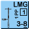
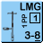
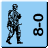
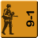
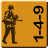
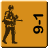
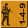
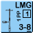
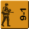
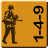

 



Jos klikkaat mitä vain pelimerkit feidaa ja tulee takas. Ideana on, että jos kartalla pistää hiiren napin pohjaan, niin sekunnin päästä pelimerkit menee piiloon, mutta tällä hetkellä menee piiloon kaikista klikeistä, sekunnin päästä -__-


